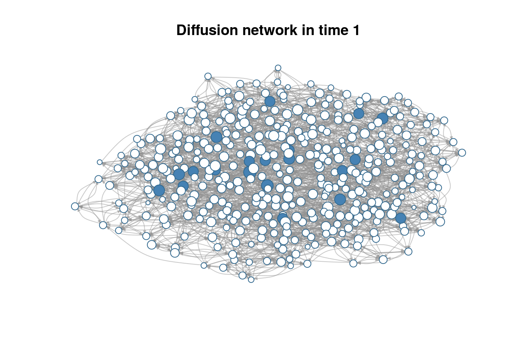
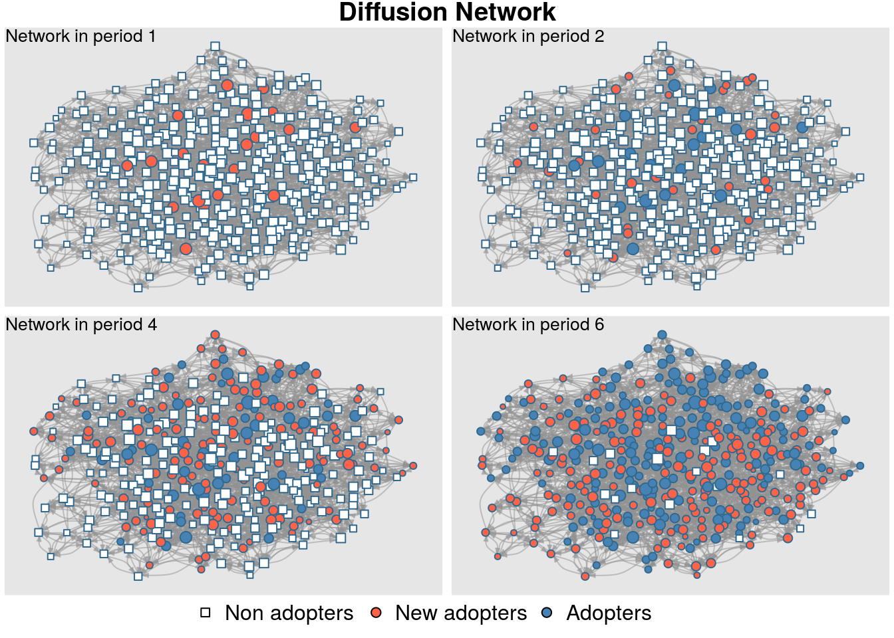
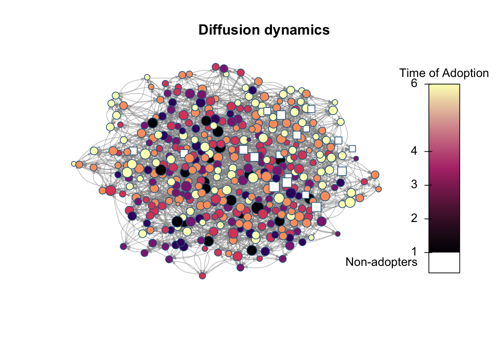
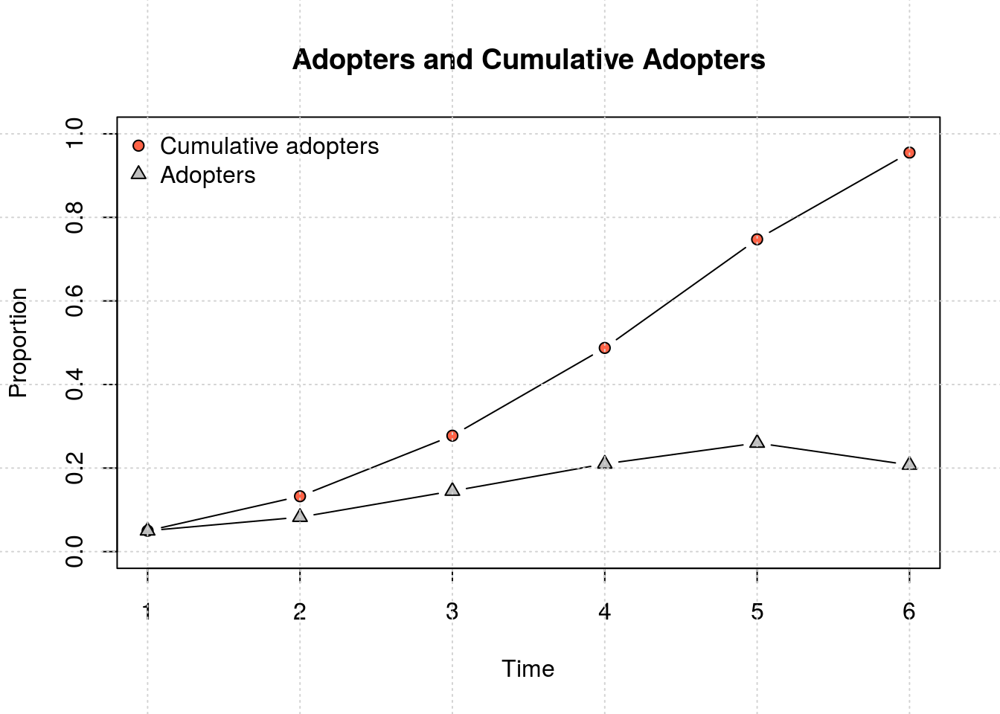
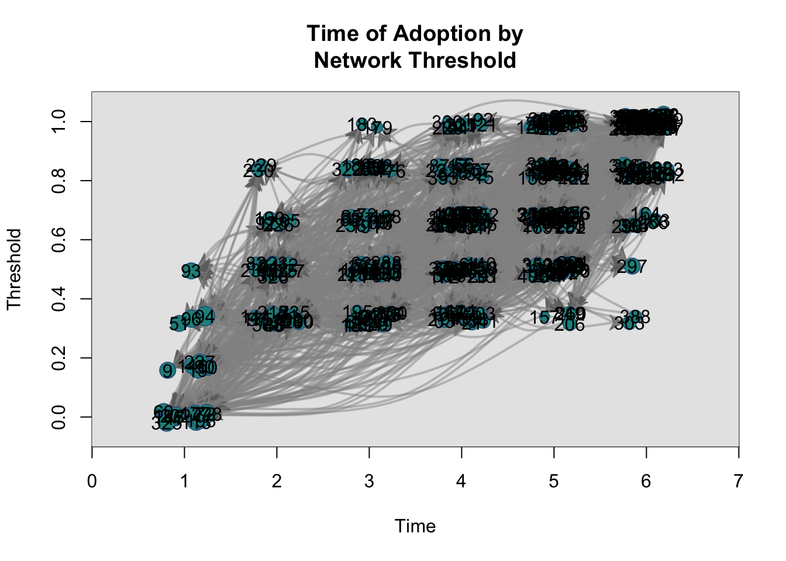
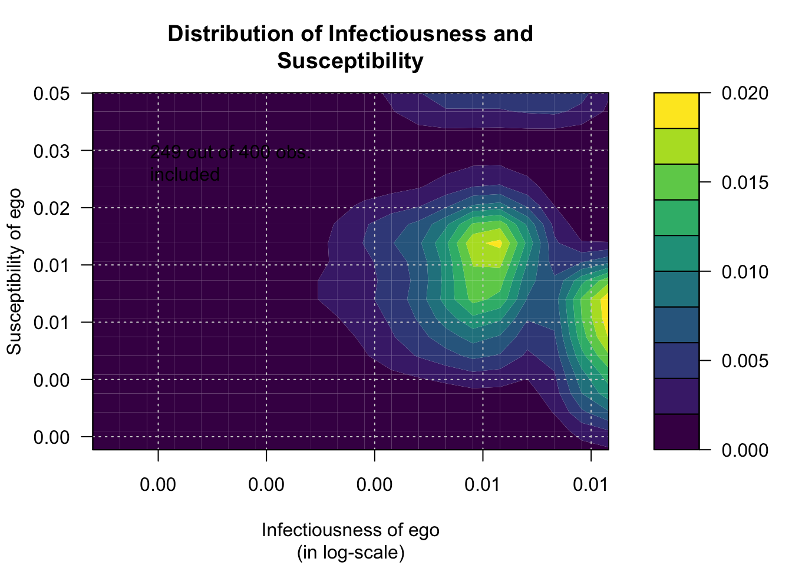
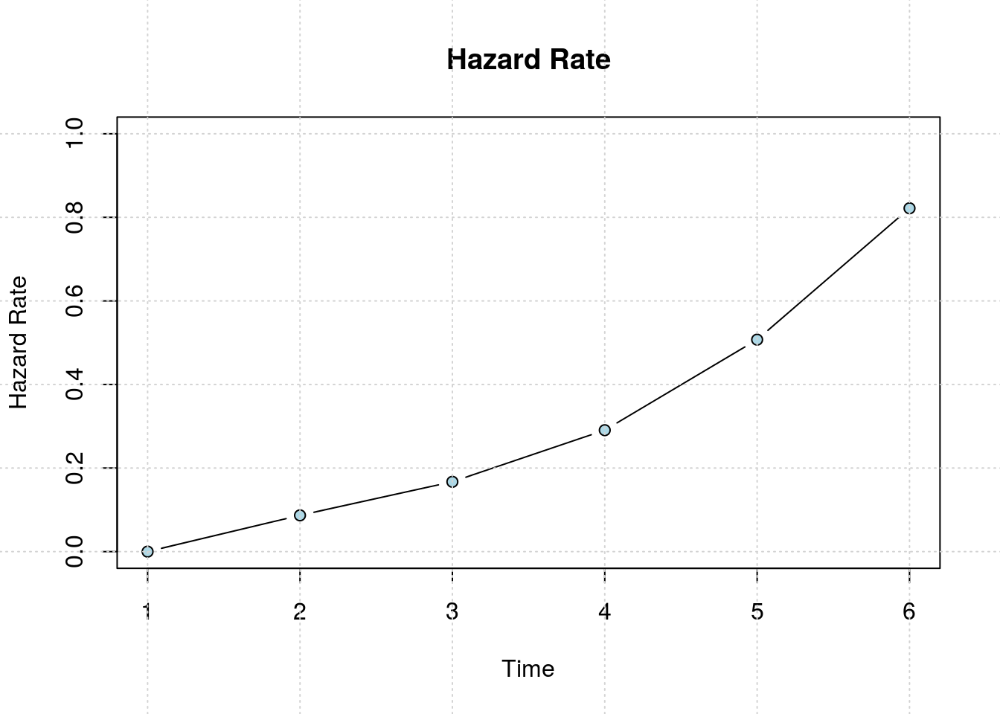

Introduction
Network Diffusion of Innovations
Diffusion networks
Explains how new ideas and practices (innovations) spread within and between communities.
While a lot of factors have been shown to influence diffusion (Spatial, Economic, Cultural, Biological, etc.), Social Networks is a prominent one.
There are many components in the diffusion network model including network exposures, thresholds, infectiousness, susceptibility, hazard rates, diffusion rates (bass model), clustering (Moran’s I), and so on.
Thresholds
One of the cannonical concepts is the network threshold. Network thresholds (Valente, 1995; 1996), \(\tau\), are defined as the required proportion or number of neighbors that leads you to adopt a particular behavior (innovation), \(a=1\). In (very) general terms
\[ a_i = \left\{\begin{array}{ll} 1 &\mbox{if } \tau_i\leq E_i \\ 0 & \mbox{Otherwise} \end{array}\right. \qquad E_i \equiv \frac{\sum_{j\neq i}\mathbf{X}_{ij}a_j}{\sum_{j\neq i}\mathbf{X}_{ij}} \]
Where \(E_i\) is i’s exposure to the innovation and \(\mathbf{X}\) is the adjacency matrix (the network).
This can be generalized and extended to include covariates and other network weighting schemes (that’s what netdiffuseR is all about).
netdiffuseR
Overview
netdiffuseR is an R package that:
Is designed for Visualizing, Analyzing and Simulating network diffusion data (in general).
Depends on some pretty popular packages:
- RcppArmadillo: So it’s fast,
- Matrix: So it’s big,
- statnet and igraph: So it’s not from scratch
Can handle big graphs, e.g., an adjacency matrix with more than 4 billion elements (PR for RcppArmadillo)
Already on CRAN with ~6,000 downloads since its first version, Feb 2016,
A lot of features to make it easy to read network (dynamic) data, making it a nice companion of other net packages.
Datasets
netdiffuseR has the three classic Diffusion Network Datasets:
medInnovationsDiffNetDoctors and the innovation of Tetracycline (1955).brfarmersDiffNetBrazilian farmers and the innovation of Hybrid Corn Seed (1966).kfamilyDiffNetKorean women and Family Planning methods (1973).
::: {.cell}
brfarmersDiffNet::: {.cell-output .cell-output-stdout}
# Dynamic network of class -diffnet- # Name : Brazilian Farmers # Behavior : Adoption of Hybrid Corn Seeds # # of nodes : 692 (1001, 1002, 1004, 1005, 1007, 1009, 1010, 1020, ...) # # of time periods : 21 (1946 - 1966) # Type : directed # Final prevalence : 1.00 # Static attributes : village, idold, age, liveout, visits, contact, coo... (146) # Dynamic attributes : -:::
medInnovationsDiffNet::: {.cell-output .cell-output-stdout}
# Dynamic network of class -diffnet- # Name : Medical Innovation # Behavior : Adoption of Tetracycline # # of nodes : 125 (1001, 1002, 1003, 1004, 1005, 1006, 1007, 1008, ...) # # of time periods : 18 (1 - 18) # Type : directed # Final prevalence : 1.00 # Static attributes : city, detail, meet, coll, attend, proage, length, ... (58) # Dynamic attributes : -:::
kfamilyDiffNet::: {.cell-output .cell-output-stdout}
# Dynamic network of class -diffnet- # Name : Korean Family Planning # Behavior : Family Planning Methods # # of nodes : 1047 (10002, 10003, 10005, 10007, 10010, 10011, 10012, 10014, ...) # # of time periods : 11 (1 - 11) # Type : directed # Final prevalence : 1.00 # Static attributes : village, recno1, studno1, area1, id1, nmage1, nmag... (430) # Dynamic attributes : -::: :::
Visualization methods
set.seed(12315)
x <- rdiffnet(
400, t = 6, rgraph.args = list(k=6, p=.3),
seed.graph = "small-world",
seed.nodes = "central", rewire = FALSE, threshold.dist = 1/4
)
plot(x)
plot_diffnet(x)
plot_diffnet2(x)
plot_adopters(x)
plot_threshold(x)
plot_infectsuscep(x, K=2)# Warning in plot_infectsuscep.list(graph$graph, graph$toa, t0, normalize, : When
# applying logscale some observations are missing.
plot_hazard(x)
Problems
- Using the diffnet object in
intro.rda, use the functionplot_thresholdspecifying shapes and colors according to the variables ItrustMyFriends and Age. Do you see any pattern? (solution script and solution plot)